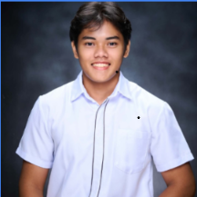

"Dedicated • Responsible • Hardworking"
Learn MoreHello! I am Travis Liam H. Cuares, a Bachelor of Science in Environmental Science student at Caraga State University. I am a hardworking, friendly, and responsible individual who enjoys learning new things and improving my skills. I believe that honesty, teamwork, and perseverance are important values that help me grow personally and professionally.
My goal is to become a competent environmental professional who contributes to protecting nature and promoting sustainable development. I want to continuously improve my knowledge, develop practical skills, and make a positive impact on society.
Exploring nature and learning about the environment.
Reading educational books and research articles.
Listening to music during my free time.
Learning new computer applications and technologies.
Bachelor of Science in Environmental Science
Accountancy, Business and Management (ABM)
With Honor
Junior High School
Email: travisliamcuares@gmail.com
Phone: 09563821756
Address: Brgy. Agao, Butuan City